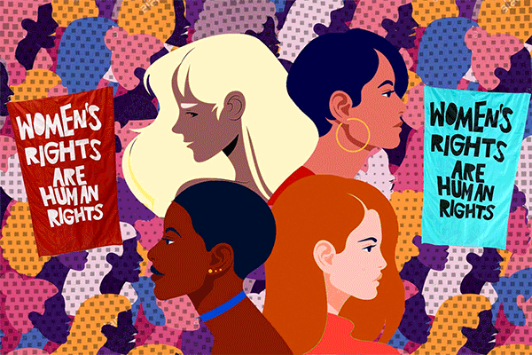

This article by Winnie Hu explains a study of women's inequality in the workplace.
www.openglobalrights.org
After 60 years when the federal law mandated equal pay for equal work, women living in New York City still earned less than men. according to the Center for New York City Affairs, the study shows that women in the city earn 90 cents for every dollar earned by men.
https://www.nytimes.com/2023/11/01/nyregion/pay-gap-women-nyc.html
This is the link to the article
The video was taken from Pedro Honorio Silva. credits goes to Finansforbundet(wwww.finansforbundet.dk)
I created this animation of women's right